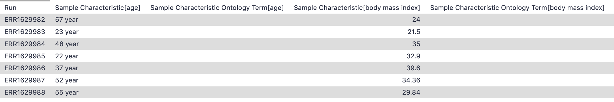

After completing the MuSiC deconvolution tutorial (Wang et al. 2019), you are hopefully excited to apply this analysis to data of your choice. Annoyingly, getting data in the right format is often what prevents us from being able to successfully apply analyses. This tutorial is all about reformatting a raw bulk RNA-seq dataset pulled from a public resource (the EMBL-EBI Expression atlas (Moreno et al. 2021). Let’s get started!
Just as in our scRNA-dataset preparation tutorial, we will tackle the metadata first. We are roughly following the same concept as in the previous bulk deconvolution tutorial, by comparing human pancreas data across a disease variable (type II diabetes vs healthy), but using public datasets to do it.
Find the data
We explored the expression atlas, browsing experiments in order to find the bulk RNA-seq pancreas dataset (Segerstolpe et al. 2016). You can explore this dataset here using their browser. These cells come from 7 healthy individuals and 4 individuals with Type II diabetes, so we will create reference Expression Set objects for the total as well as separating out by phenotype, as you may have reason to do this in your analysis (or you may not!). This dataset is from the same lab that we built our scRNA-seq reference from, so we should get quite accurate results given the same lab made both datasets!
Hands-on: Data upload
Create a new history for this tutorial
Import the files from Zenodo or from
the shared data library (GTN - Material -> single-cell
-> Bulk matrix to ESet | Creating the bulk RNA-seq dataset for deconvolution):
Click galaxy-uploadUpload Data at the top of the tool panel
Select galaxy-wf-editPaste/Fetch Data
Paste the link(s) into the text field
Press Start
Close the window
Rename the datasets as needed
Check that the datatype is tabular
Click on the galaxy-pencilpencil icon for the dataset to edit its attributes
In the central panel, click on the galaxy-gearConvert tab on the top
In the lower part galaxy-chart-select-dataDatatypes, select tabular
tip: you can start typing the datatype into the field to filter the dropdown menu
Click the Save button
Add to experiment-design the following tags #metadata #bulk #ebi
Click on the dataset to expand it
Click on Add Tagsgalaxy-tags
Add a tag starting with #
Tags starting with # will be automatically propagated to the outputs of tools using this dataset.
Press Enter
Check that the tag appears below the dataset name
As before, the metadata object annoyingly has a bunch of unnecessary columns. You can examine this with the galaxy-eye in the Galaxy history. Let’s remove them!

Tools are frequently updated to new versions. Your Galaxy may have multiple versions of the same tool available. By default, you will be shown the latest version of the tool. This may NOT be the same tool used in the tutorial you are accessing. Furthermore, if you use a newer tool in one step, and try using an older tool in the next step… this may fail! To ensure you use the same tool versions of a given tutorial, use the Tutorial mode feature.
Open your Galaxy server
Click on the curriculum icon on the top menu, this will open the GTN inside Galaxy.
Navigate to your tutorial
Tool names in tutorials will be blue buttons that open the correct tool for you
Note: this does not work for all tutorials (yet)
You can click anywhere in the grey-ed out area outside of the tutorial box to return back to the Galaxy analytical interface
Warning: Not all browsers work!
We’ve had some issues with Tutorial mode on Safari for Mac users.
Try a different browser if you aren’t seeing the button.
Hands-on: Remove unnecessary columns
Advanced Cut ( Galaxy version 1.1.0) with the following parameters:
Advanced cut works slightly differently in a workflow versus running the tool independently. Independently, there is a list and you can click through the list to note your columns, while in a workflow it appears as a text option and you put each column on a different line. The point is, each number above represents a column, so remove them!
Now let’s take care of the excessively wordy header titles - and note that oftentimes various programmes struggle with titles or cells that have any spaces ` ` in them, so removing those now often saves hassle later.
Comment
You might also remember in the MuSiC tutorial that we can analyse numeric parameters in the metadata (in that case, hbac1c content). Reformatting to ensure numerical values in these columns (i.e. taking the ` years` out of an age cell) is helpful then too.
Hands-on: Fixing titles
Regex Find And Replace ( Galaxy version 1.0.2) with the following parameters:
param-file“Select lines from”: output (output of Advanced Cuttool)
In “Check”:
param-repeat“Insert Check”
“Find Regex”: Sample Characteristic\[age\]
“Replacement”: Age
param-repeat“Insert Check”
“Find Regex”: year
param-repeat“Insert Check”
“Find Regex”: Sample Characteristic\[body mass index\]
“Replacement”: BMI
param-repeat“Insert Check”
“Find Regex”: Sample Characteristic\[disease\]
“Replacement”: Disease
param-repeat“Insert Check”
“Find Regex”: Sample Characteristic\[individual\]
“Replacement”: Individual
param-repeat“Insert Check”
“Find Regex”: Sample Characteristic\[sex\]
“Replacement”: Sex
Change the datatype to tabular
Click on the galaxy-pencilpencil icon for the dataset to edit its attributes
In the central panel, click on the galaxy-gearConvert tab on the top
In the lower part galaxy-chart-select-dataDatatypes, select tabular
tip: you can start typing the datatype into the field to filter the dropdown menu
Click the Save button
Now examine galaxy-eye your resultant metadata file in the Galaxy history. Better, right?
This is ready to go, so now we’ll reformat the matrix!
Manipulate the expression matrix
Let’s upload the dataset.
Hands-on: Data upload
Import the files from Zenodo or from
the shared data library (GTN - Material -> single-cell
-> Bulk matrix to ESet | Creating the bulk RNA-seq dataset for deconvolution):
By examining the matrix, you can find that genes are the rows while samples are the columns.
While it’s awesome that there’s a gene name column, unfortunately the gene names will be duplicated - different ENS IDs can refer to the same Gene Name. This going to be a problem later. So we need to get this in a format to collapse the ENS IDs, just as we did previously in the scRNA-seq data reference preparation. Sadly, we’ll start by removing the column of gene names to prepare for the ENS ID collapse.
Hands-on: Remove gene names column
Remove columns ( Galaxy version 1.0) with the following parameters:
Now that your data is in a format of having a rows of ENS IDs and samples as columns, you can apply the handy ENS ID collapsing workflow as we did in the scRNA-seq reference. If you have already imported this workflow during the first tutorial, then you can use it again now.
Hands-on: Convert from Ensembl to GeneSymbol using workflow
Figure 3: Output of the ENS ID collapsing workflow for bulk dataset
Success! You’ve now prepared your metadata and your matrix. It’s time to put it together to create the Expression Set objects needed for MuSiC deconvolution.
Construct Expression Set Objects
We have three more tasks to do: first, we need to create the expression set object with all the phenotypes combined. Then, we will create the two objects we actually need - one for healthy and one for diseased.
Hands-on: Creating the combined object
Construct Expression Set Object ( Galaxy version 0.1.1+galaxy4) with the following parameters:
param-file“Assay Data”: out_file #matrix (output of Text transformationtool)
param-file“Phenotype Data”: out_file1 #metadata (output of Regex Find And Replacetool)
Remove the #metadata #matrix tags from the output RData ESet Object
Question
How many genes are in your object?
How many samples?
What metadata categories are there?
The trick with all of these questions is to examine galaxy-eye the General info output param-file of the Construct Expression Set Object tool.
The metadata categories are the same you prepared earlier, shown here in a category of phenoData: Age BMI Disease Sex
Hands-on: Creating the disease-only object
Manipulate Expression Set Object ( Galaxy version 0.1.1+galaxy4) with the following parameters:
param-file“Expression Set Dataset”: out_rds (output of Construct Expression Set Objecttool)
“Concatenate other Expression Set objects?”: No
“Subset the dataset?”: Yes
“By”: Filter Samples and Genes by Phenotype Values
In “Filter Samples by Condition”:
param-repeat“Insert Filter Samples by Condition”
“Name of phenotype column”: Disease
“List of values in this column to filter for, comma-delimited”: type II diabetes mellitus
Add the tag #T2D to the output RData ESet Object
You can either re-run this tool or set it up again to create the healthy-only object.
Hands-on: Creating the healthy-only object
Manipulate Expression Set Object ( Galaxy version 0.1.1+galaxy4) with the following parameters:
param-file“Expression Set Dataset”: out_rds (output of Construct Expression Set Objecttool)
“Concatenate other Expression Set objects?”: No
“Subset the dataset?”: Yes
“By”: Filter Samples and Genes by Phenotype Values
In “Filter Samples by Condition”:
param-repeat“Insert Filter Samples by Condition”
“Name of phenotype column”: Disease
“List of values in this column to filter for, comma-delimited”: normal
Add the tag #healthy to the output RData ESet Object
Conclusion
congratulations Congrats! You have successfully reformatted the RNA-seq samples into two ESet objects consisting of disease-only or healthy-only samples. You’re ready to take all this hard work and start comparing cell compositions in the next tutorial.
Further information, including links to documentation and original publications, regarding the tools, analysis techniques and the interpretation of results described in this tutorial can be found here.
References
Segerstolpe, Å., A. Palasantza, P. Eliasson, E.-M. Andersson, A.-C. Andréasson et al., 2016 Single-cell transcriptome profiling of human pancreatic islets in health and type 2 diabetes. Cell metabolism 24: 593–607. 10.1016/j.cmet.2016.08.020
Wang, X., J. Park, K. Susztak, N. R. Zhang, and M. Li, 2019 Bulk tissue cell type deconvolution with multi-subject single-cell expression reference. Nature communications 10: 1–9. 10.1038/s41467-018-08023-x
Moreno, P., S. Fexova, N. George, J. R. Manning, Z. Miao et al., 2021 Expression Atlas update: gene and protein expression in multiple species. Nucleic Acids Research 50: D129–D140. 10.1093/nar/gkab1030
Feedback
Did you use this material as an instructor? Feel free to give us feedback on how it went.
Did you use this material as a learner or student? Click the form below to leave feedback.
Hiltemann, Saskia, Rasche, Helena et al., 2023 Galaxy Training: A Powerful Framework for Teaching! PLOS Computational Biology 10.1371/journal.pcbi.1010752
Batut et al., 2018 Community-Driven Data Analysis Training for Biology Cell Systems 10.1016/j.cels.2018.05.012
@misc{single-cell-bulk-music-3-preparebulk,
author = "Wendi Bacon and Mehmet Tekman",
title = "Bulk matrix to ESet | Creating the bulk RNA-seq dataset for deconvolution (Galaxy Training Materials)",
year = "",
month = "",
day = ""
url = "\url{https://training.galaxyproject.org/training-material/topics/single-cell/tutorials/bulk-music-3-preparebulk/tutorial.html}",
note = "[Online; accessed TODAY]"
}
@article{Hiltemann_2023,
doi = {10.1371/journal.pcbi.1010752},
url = {https://doi.org/10.1371%2Fjournal.pcbi.1010752},
year = 2023,
month = {jan},
publisher = {Public Library of Science ({PLoS})},
volume = {19},
number = {1},
pages = {e1010752},
author = {Saskia Hiltemann and Helena Rasche and Simon Gladman and Hans-Rudolf Hotz and Delphine Larivi{\`{e}}re and Daniel Blankenberg and Pratik D. Jagtap and Thomas Wollmann and Anthony Bretaudeau and Nadia Gou{\'{e}} and Timothy J. Griffin and Coline Royaux and Yvan Le Bras and Subina Mehta and Anna Syme and Frederik Coppens and Bert Droesbeke and Nicola Soranzo and Wendi Bacon and Fotis Psomopoulos and Crist{\'{o}}bal Gallardo-Alba and John Davis and Melanie Christine Föll and Matthias Fahrner and Maria A. Doyle and Beatriz Serrano-Solano and Anne Claire Fouilloux and Peter van Heusden and Wolfgang Maier and Dave Clements and Florian Heyl and Björn Grüning and B{\'{e}}r{\'{e}}nice Batut and},
editor = {Francis Ouellette},
title = {Galaxy Training: A powerful framework for teaching!},
journal = {PLoS Comput Biol} Computational Biology}
}
Congratulations on successfully completing this tutorial!
Go Further
Do you want to extend your knowledge? Follow one of our recommended follow-up trainings:
Questions:

 Open image in new tab
Open image in new tabOpen image in new tab
 Open image in new tab
Open image in new tabOpen image in new tab
 Open image in new tab
Open image in new tab